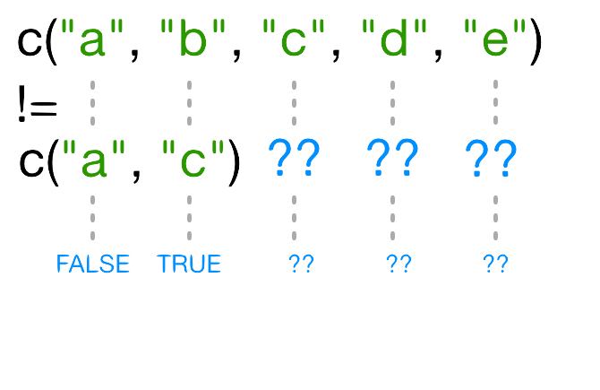

12 R Subsetting Exercise
12.1 Ackowledgements
This chapter is a slightly modified version of the
chapter from
R for Reproducible Scientific Analysis
by
software carpentry
which is made available under the Creative Commons Attribution license 4.0 link.
This chapter is made available according to the same license.
12.2 Learning objectives
- To be able to subset vectors, factors, matrices, lists, and data frames
- To be able to extract individual and multiple elements: by index, by name, using comparison operations
- To be able to skip and remove elements from various data structures.
- How can I work with subsets of data in R?
R has many powerful subset operators. Mastering them will allow you to easily perform complex operations on any kind of dataset.
There are six different ways we can subset any kind of object, and three different subsetting operators for the different data structures.
Let’s start with the workhorse of R: a simple numeric vector.
So now that we’ve created a dummy vector to play with, how do we get at its contents?
12.3 Accessing elements using their indices
To extract elements of a vector we can give their corresponding index, starting from one:
It may look different, but the square brackets operator is a function. For vectors (and matrices), it means “get me the nth element”.
We can ask for multiple elements at once:
Or slices of the vector:
the : operator creates a sequence of numbers from the left element to the right.
We can ask for the same element multiple times:
If we ask for an index beyond the length of the vector, R will return a missing value:
This is a vector of length one containing an NA, whose name is also NA.
If we ask for the 0th element, we get an empty vector:
12.4 Skipping and removing elements
If we use a negative number as the index of a vector, R will return every element except for the one specified:
We can skip multiple elements:
To remove elements from a vector, we need to assign the result back into the variable:
12.5 Challenge 1
Given the following code:
Come up with at least 2 different commands that will produce the following output:
After you find 2 different commands, compare notes with your neighbour. Did you have different strategies?
12.6 Subsetting by name
We can extract elements by using their name, instead of extracting by index:
This is usually a much more reliable way to subset objects: the position of various elements can often change when chaining together subsetting operations, but the names will always remain the same!
12.7 Subsetting through other logical operations
We can also use any logical vector to subset:
Since comparison operators (e.g. >, <, ==) evaluate to logical vectors, we can also use them to succinctly subset vectors: the following statement gives the same result as the previous one.
Breaking it down, this statement first evaluates x>7, generating a logical vector c(FALSE, FALSE, TRUE, FALSE, TRUE), and then selects the elements of x corresponding to the TRUE values.
We can use == to mimic the previous method of indexing by name (remember you have to use == rather than = for comparisons):
12.8 Challenge 2
Given the following code:
Write a subsetting command to return the values in x that are greater than 4 and less than 7.
12.9 Skipping named elements
Skipping or removing named elements is a little harder. If we try to skip one named element by negating the string, R complains (slightly obscurely) that it doesn’t know how to take the negative of a string:
However, we can use the != (not-equals) operator to construct a logical vector that will do what we want:
Skipping multiple named indices is a little bit harder still. Suppose we want to drop the "a" and "c" elements, so we try this:
R did something, but it gave us a warning that we ought to pay attention to - and it apparently gave us the wrong answer (the "c" element is still included in the vector)!
So what does != actually do in this case? That’s an excellent question.
12.9.1 Recycling
Let’s take a look at the comparison component of this code:
Why does R give TRUE as the third element of this vector, when names(x)[3] != "c" is obviously false? When you use !=, R tries to compare each element of the left argument with the corresponding element of its right argument. What happens when you compare vectors of different lengths?

When one vector is shorter than the other, it gets recycled:

In this case R repeats c("a", "c") as many times as necessary to match names(x), i.e. we get c("a","c","a","c","a"). Since the recycled "a" doesn’t match the third element of names(x), the value of != is TRUE. Because in this case the longer vector length (5) isn’t a multiple of the shorter vector length (2), R printed a warning message. If we had been unlucky and names(x) had contained six elements, R would silently have done the wrong thing (i.e., not what we intended it to do). This recycling rule can can introduce hard-to-find and subtle bugs!
The way to get R to do what we really want (match each element of the left argument with all of the elements of the right argument) it to use the %in% operator. The %in% operator goes through each element of its left argument, in this case the names of x, and asks, “Does this element occur in the second argument?”. Here, since we want to exclude values, we also need a ! operator to change “in” to “not in”:
12.10 Challenge 3
Selecting elements of a vector that match any of a list of components is a very common data analysis task. For example, the gapminder data set contains country and continent variables, but no information between these two scales. Suppose we want to pull out information from southeast Asia: how do we set up an operation to produce a logical vector that is TRUE for all of the countries in southeast Asia and FALSE otherwise?
Suppose you have these data:
There’s a wrong way (using only ==), which will give you a warning; a clunky way (using the logical operators == and |); and an elegant way (using %in%). See whether you can come up with all three and explain how they (don’t) work.
- The wrong way to do this problem is
countries==seAsia. This gives a warning ("In countries == seAsia : longer object length is not a multiple of shorter object length") and the wrong answer (a vector of allFALSEvalues), because none of the recycled values ofseAsiahappen to line up correctly with matching values incountry. - The clunky (but technically correct) way to do this problem is
(or countries==seAsia[1] | countries==seAsia[2] | ...). This gives the correct values, but hopefully you can see how awkward it is (what if we wanted to select countries from a much longer list?).
- The best way to do this problem is
countries %in% seAsia, which is both correct and easy to type (and read).
12.11 Handling special values
At some point you will encounter functions in R that cannot handle missing, infinite, or undefined data.
There are a number of special functions you can use to filter out this data:
is.nawill return all positions in a vector, matrix, or data.frame containingNA(orNaN)- likewise,
is.nan, andis.infinitewill do the same forNaNandInf. is.finitewill return all positions in a vector, matrix, or data.frame that do not containNA,NaNorInf.na.omitwill filter out all missing values from a vector
12.12 Factor subsetting
Now that we’ve explored the different ways to subset vectors, how do we subset the other data structures?
Factor subsetting works the same way as vector subsetting.
Skipping elements will not remove the level even if no more of that category exists in the factor:
12.13 Matrix subsetting
Matrices are also subsetted using the [ function. In this case it takes two arguments: the first applying to the rows, the second to its columns:
You can leave the first or second arguments blank to retrieve all the rows or columns respectively:
If we only access one row or column, R will automatically convert the result to a vector:
If you want to keep the output as a matrix, you need to specify a third argument; drop = FALSE:
Unlike vectors, if we try to access a row or column outside of the matrix, R will throw an error:
Because matrices are vectors, we can also subset using only one argument:
This usually isn’t useful, and often confusing to read. However it is useful to note that matrices are laid out in column-major format by default. That is the elements of the vector are arranged column-wise:
If you wish to populate the matrix by row, use byrow=TRUE:
Matrices can also be subsetted using their rownames and column names instead of their row and column indices.
12.14 Challenge 4
Given the following code:
- Which of the following commands will extract the values 11 and 14?
A. m[2,4,2,5]
B. m[2:5]
C. m[4:5,2]
D. m[2,c(4,5)]
D
12.15 List subsetting
Now we’ll introduce some new subsetting operators. There are three functions used to subset lists. We’ve already seen these when learning about atomic vectors and matrices: [, [[, and $.
Using [ will always return a list. If you want to subset a list, but not extract an element, then you will likely use [.
This returns a list with one element.
We can subset elements of a list exactly the same way as atomic vectors using [. Comparison operations however won’t work as they’re not recursive, they will try to condition on the data structures in each element of the list, not the individual elements within those data structures.
To extract individual elements of a list, you need to use the double-square bracket function: [[.
Notice that now the result is a vector, not a list.
You can’t extract more than one element at once:
Nor use it to skip elements:
But you can use names to both subset and extract elements:
The $ function is a shorthand way for extracting elements by name:
12.16 Challenge 5
Given the following list:
Using your knowledge of both list and vector subsetting, extract the number 2 from xlist. Hint: the number 2 is contained within the “b” item in the list.
12.17 Challenge 6
Given a linear model:
Extract the residual degrees of freedom (hint: attributes() will help you)
12.18 Data frames
Remember the data frames are lists underneath the hood, so similar rules apply. However they are also two dimensional objects:
[ with one argument will act the same way as for lists, where each list element corresponds to a column. The resulting object will be a data frame:
Similarly, [[ will act to extract a single column:
And $ provides a convenient shorthand to extract columns by name:
With two arguments, [ behaves the same way as for matrices:
If we subset a single row, the result will be a data frame (because the elements are mixed types):
But for a single column the result will be a vector (this can be changed with the third argument, drop = FALSE).
12.19 Challenge 7
Fix each of the following common data frame subsetting errors:
- Extract observations collected for the year 1957
- Extract all columns except 1 through to 4
- Extract the rows where the life expectancy is longer the 80 years
- Extract the first row, and the fourth and fifth columns (
continentandlifeExp).
- Advanced: extract rows that contain information for the years 2002 and 2007
Fix each of the following common data frame subsetting errors:
- Extract observations collected for the year 1957
- Extract all columns except 1 through to 4
- Extract the rows where the life expectancy is longer than 80 years
- Extract the first row, and the fourth and fifth columns (
continentandlifeExp).
- Advanced: extract rows that contain information for the years 2002 and 2007
12.20 Challenge 8
Why does
gapminder[1:20]return an error? How does it differ fromgapminder[1:20, ]?Create a new
data.framecalledgapminder_smallthat only contains rows 1 through 9 and 19 through 23. You can do this in one or two steps.
gapminderis a data.frame so needs to be subsetted on two dimensions.gapminder[1:20, ]subsets the data to give the first 20 rows and all columns.
- Indexing in R starts at 1, not 0.
- Access individual values by location using
[]. - Access slices of data using
[low:high]. - Access arbitrary sets of data using
[c(...)]. - Use logical operations and logical vectors to access subsets of data.